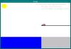

O'ksi'D home page
RED BULL FLUGTAG 2001.
8 SEPTEMBRE 2001, LAUSANNE-OUCHY
www.flugtag.ch
"FLYING IRON"
team Nickasil production

Téléchargez
notre simulateur de vol de fer à repasser :
version Linux (Debian 2.2) :
flugtag_linux
version Windows 98 :
flugtag_98.exe
version Windows NT 4.0 :
flugtag_nt.exe
version SGI IRIX 6.5 :
flugtag_irix
code source :
flugtag.tgz